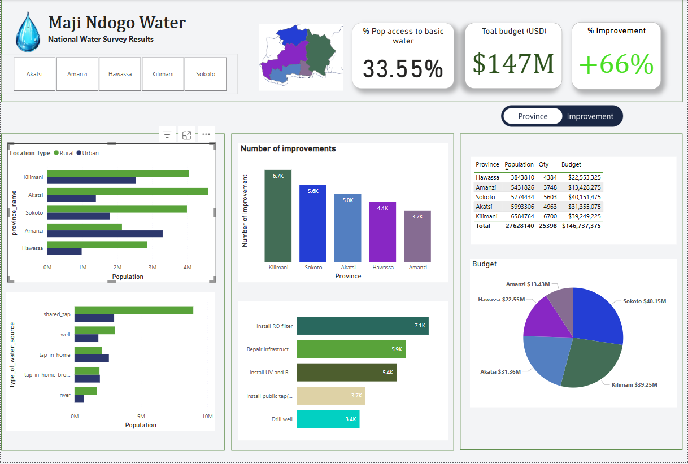

Portfolio
Dashboards
Power BI Dashboards and Data Visualizations
Performance and Impact Assessment Dashboard
This National Water Survey Dashboard tracks water access, budget allocation, and infrastructure improvements across provinces. It highlights key metrics like population access (33.55%), total budget ($147M), and improvement rate (+66%), providing insights into resource distribution and project impact.
Operational Efficiency Dashboard
This project is a National Water Improvement Dashboard which provides an overview of water infrastructure projects, tracking their completion, costs, and impact.

SQL Project
Exploratory Data Analysis and Data Queries
- Ensuring Data Integrity for Water Safety
- Data Cleaning and Validation with Complex Queries
- Analysing Data: Validation and integrity checks
- Analysing Data: Validation and integrity checks
- Final analysis to ensure practical implementation
This project involves advanced SQL queries to analyze visit patterns, water source reliability, and contamination levels by extracting meaningful insights and driving solutions to improve water accessibility and safety in the region.
Leveraging complex SQL queries, we cleaned, analyzed and ranked data to gain actionable key insights with the purpose of improving water access.
Using SQL queries, we compared surveyor and auditor scores, identified errors, and flagged employees with unusual mistake patterns. Further investigation, including local statements, helped detect potential data manipulation or misconduct, ensuring accountability and transparency in the Maji Ndogo project.
Using SQL queries, we compared analysis to practical implementation. The steps taken ensured that data-driven insights translated into real-world actions to improve water access.